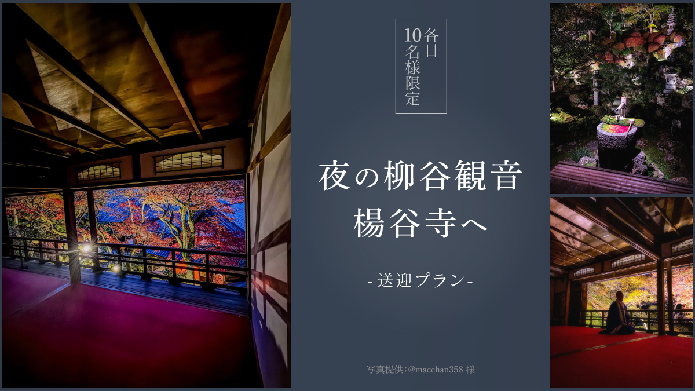
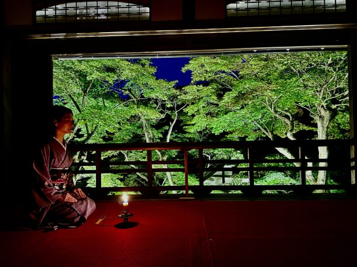
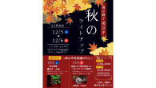
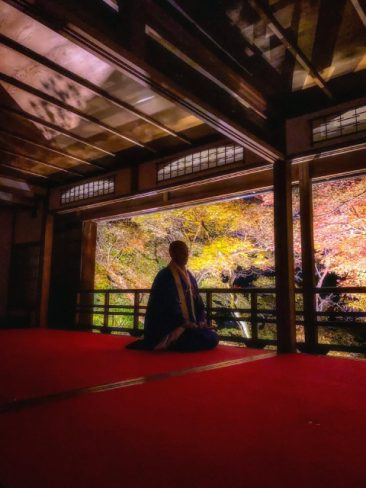
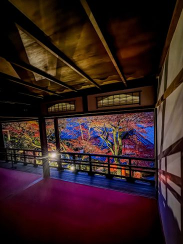
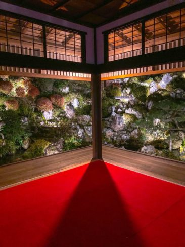
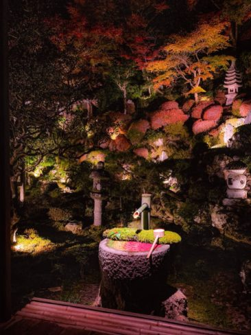

最新の情報は 公式サイトのツアーページ をご覧ください。
【各日10名様限定】夜の柳谷観音 楊谷寺へ -送迎プラン-

【特別拝観について】
※旅行代金には、特別拝観料（おひとり様10,000円）は含まれておりません。特別拝観をご希望の場合は、事前にお寺の専用ページより予約・お申込みが必要です。
▼特別拝観のお申込みはこちら
https://www.yanagidani.jp/momijiweek
※特別拝観の予約・お支払いは、当ツアーのお申込みとは別に、お客様ご自身でお手続きをお願いいたします。
【貸切送迎プランのご案内】
貸切タクシー送迎運行も可能ですので、ご希望の方はお電話にてお問合せください。
料金は以下の通りです。（車種の指定不可）
| １～３名様 | 22,000円／台 |
| ４～５名様 | 26,000円／台 |
| 現在のお申込み状況(最少催行人数4名) | |
| 16時発 | |
※最新のお申込み状況はお問い合わせください
京都駅からタクシーでラクラク♪夜の柳谷観音 楊谷寺へ。
個人では少しアクセスしにくい夜の時間帯も、京都駅からタクシーでスムーズに移動♪
特別なひとときを、ゆったりとお楽しみいただけます。
12月5日・6日の2日間限定で開催される本ツアーでは、名勝庭園「浄土苑」をはじめ、上書院や奥の院へ続く回廊などを特別にご覧いただけます。
静けさに包まれた夜の境内では、日中とはまた違った幻想的な雰囲気が広がります。
12月5日は、かたりべ・満茶乃氏による「不可思議はなし」。
12月6日は、琴の優美な音色とともに、山主・執事による「不可思議はなし」をお楽しみいただきます。
いつもの京都観光とは少し違う、静かな夜だからこそ味わえる特別な時間。
京都駅からの往復タクシー送迎付きで、夜の柳谷観音 楊谷寺へ。
大人のための、少し贅沢な夜の京都旅をお楽しみください。
各日10名様限定の特別な夜。
今年の冬は、少しだけ非日常を感じる京都旅へ。

写真提供：柳谷観音 楊谷寺
柳谷観音 楊谷寺 公式HP（外部サイト）
| 授与品 限定特別御朱印・メグスリノキ茶・らくがんのおもてなし |
| 内容 5日／かたりべ満茶乃（まさの）氏をお迎えして、不可思議はなし 6日／沢井筝曲院 今井先生をお迎えして琴の演奏、山主・執事の不可思議はなし |
| 観賞エリア 名勝庭園「浄土苑」（貸切） 上書院・奥の院・回廊 |
行程
①17:00～18:30の部／②18:40～20:00の部 いずれかをお選びいただけます
| ① | ② | 場所 |
| 16:00 | 17:40 | 京都駅八条口ＭＫタクシーのりば（集合・出発） |
| 16:50頃 | 18:30頃 | 柳谷観音 楊谷寺（到着）  秋のライトアップ チラシ（クリックでPDF表示） |
| 17:00 | 18:40 | 名勝庭園 浄土苑「宵の間」 特別貸切拝観 （約90分） |
| 19:30頃 | 21:00頃 | 京都駅（解散） |
※拝観時はドライバーは同行いたしません。
※渋滞等で予定通りの滞在時間をお取りすることができない場合がございます。予めご了承ください。
※ツアー代には、拝観料が含まれておりません。当日お寺にてお納めください。




（写真提供：@macchan358様）
-
【MKトラベルLINE公式アカウント】
MKトラベルの新規ツアー情報をLINEでお届けいたします

【各SNSでも京都の情報やツアー情報をお届けしています】


旅行条件
| ツアー番号 | 2334/2335 |
| 出発地 | 京都市 |
| 添乗員／ガイド | なし（乗務員がその業務を代行いたします）／なし |
| 食事 | なし |
| 最少催行人数 | 4名 |
お申込みについてのご注意
※最少催行人数は4名様です。最少催行人員に満たない場合は、旅行の実施を取りやめることがあります。出発の３日前にその旨をご連絡し、お客様から当社がお預かりしている旅行費用の全額をお返しいたします。
※旅行条件・旅行代金は、2026年10月1日現在を基準としています。
※行程および帰着時間は交通事情などにより変更になる場合があります。
※お申込みの前に弊社の募集型企画旅行規約をご確認ください。
※本ツアーは、送迎付きプラン専用のご案内です。
拝観のみをご希望の方は、楊谷寺様の公式申込ページより直接お申し込みください。
https://www.yanagidani.jp/momijiweek
よくある質問
柳谷観音 楊谷寺に関してQ.柳谷観音 楊谷寺はどんなお寺ですか？
A.「花手水発祥の地」とも言われる、長岡京市の名刹です。境内のあちこちに可愛らしい花手水が飾られ、四季折々の美しさを楽しめます。
京都府指定文化財の本堂や山門、庫裏、京都府指定名勝の浄土苑を有しています。
1200年の伝統があり、今も眼病平癒の祈願所として人々の厚い信仰を集めています。
Q.柳谷観音 楊谷寺の紅葉の見頃はいつですか？
A.柳谷観音 楊谷寺では、例年11月下旬から12月上旬頃に紅葉を楽しめます。
ただし、見頃はその年の気温や天候によって前後します。本ツアーは12月5日・6日に実施予定です。
Q.柳谷観音 楊谷寺へは公共交通機関で行けますか？
A.柳谷観音 楊谷寺は、鉄道駅から離れた場所にありますので、電車からの下車後はバスと徒歩、もしくはタクシーで行く必要があります。本ツアーでは京都駅八条口から往復タクシーで送迎するため、夜間の移動手段を気にせず特別拝観をお楽しみいただけます。
Q.京都駅から柳谷観音 楊谷寺までどのくらいかかりますか？
A.タクシーで約50分程度です。公共交通機関を利用する場合は、約60分～90分程度かかります。
（京都駅からJR長岡京まで約10分、バスで10～15分程度移動し、その後徒歩40分～60分程度での移動※乗換による待ち時間等を除く）
Q.夜の特別拝観では何を見ることができますか？
A.名勝庭園「浄土苑」をはじめ、上書院や奥の院へ続く回廊などをご覧いただけます。
12月5日はかたりべ・満茶乃氏による「不可思議はなし」、12月6日は琴の演奏と山主・執事による「不可思議はなし」も予定されています。
Q.服装や靴で注意することはありますか？
A.夜間の拝観となりますので、防寒対策のできる服装でのご参加をおすすめします。また、境内を歩きますので、歩きやすい履物でお越しください。
なお、スリッパ等のご用意はございませんので、靴下の着用をお願いいたします。
Q.1名ですが、申し込みできますか？
A.はい。お一人参加の方もたくさんいらっしゃいますので、お気軽にお申し込みください。
Q.夜以外に楊谷寺へ行くプランはないのでしょうか？
秋の朝の観光をご希望の方は【9名様限定・特別貸切】誰もいない朝の柳谷観音 楊谷寺へ ～開門前の静寂に包まれる、京都西山の特別な朝～（期間限定運行）をぜひご利用ください。
毎月17日の縁日が対象の毎月17日限定!!京都のかわいい花手水と心ときめく癒し旅 ～楊谷寺＆勝林寺巡り～もおすすめです。
上記ツアー期間外の観光をご希望の方は京都の隠れた名所ツアー ～ 長岡京の名刹＆花手水を楽しむ旅 ～をぜひご利用ください。
Q.知り合いのみで行きたいです／少人数での参加希望です
A.貸切タクシー送迎運行も可能ですので、ご希望の方はお電話（080-9150-7173／10:00～17:30・日祝除く）にてお問合せください。
１～３名様→22,000円/台、４～５名様→26,000円/台から受付しております（車種の指定不可）。
＜お問合せフォームはこちら▶＞
＜MKトラベルTOPはこちら▶＞
＜おすすめツアー一覧はこちら▶＞
【WEBシステムよりご予約の場合】
・TACPOカード
・コンビニ決済
・クレジットカード決済
お支払方法詳細はこちら
お客様のご都合でご予約をキャンセルされる場合は、すみやかに下記お問合せ先までご連絡ください。
◆コンビニ決済をご選択の場合、支払期限を過ぎますとご予約は自動的にキャンセルとなりますのでご注意ください。
◆お客様のご都合でご予約をキャンセルされた場合、下記キャンセル料を申し受けます。お支払いいただきました旅行代金よりキャンセル料を相殺して、お客様へご返金させていただきます。
【店頭決済／銀行振込／コンビニ決済の場合】
お客様のご指定の口座へご返金させていただきます。
【クレジットカード決済の場合】
ご利用のクレジットカード会社を経由して、ご返金させていただきます。締め日のタイミングによっては一度請求が発生し、その後返金処理となります。キャンセル料
11日目に当たる日以前
無料
10日目に当たる日以前
20%
7日目に当たる日以前
30%
旅行開始日の前日
40%
旅行開始日の当日
50%
旅行開始後又は無連絡
100%